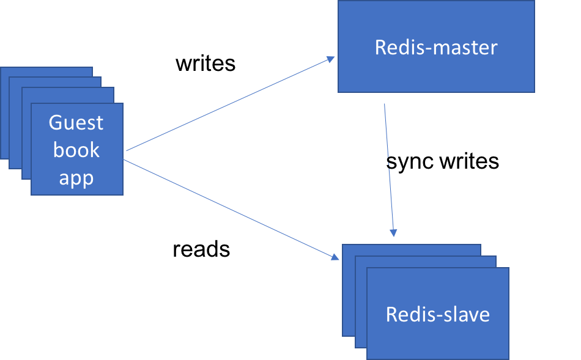

Lab 3: Scale and update apps natively, building multi-tier applications.
2. Connect to a back-end service.
If you look at the guestbook source code, under the guestbook/v1/guestbook
directory, you'll notice that it is written to support a variety of data
stores. By default it will keep the log of guestbook entries in memory.
That's ok for testing purposes, but as you get into a more "real" environment
where you scale your application that model will not work because
based on which instance of the application the user is routed to they'll see
very different results.
To solve this we need to have all instances of our app share the same data store - in this case we're going to use a redis database that we deploy to our cluster. This instance of redis will be defined in a similar manner to the guestbook.
redis-master-deployment.yaml
apiVersion: apps/v1
kind: Deployment
metadata:
name: redis-master
labels:
app: redis
role: master
spec:
replicas: 1
selector:
matchLabels:
app: redis
role: master
template:
metadata:
labels:
app: redis
role: master
spec:
containers:
- name: redis-master
image: redis:3.2.9
ports:
- name: redis-server
containerPort: 6379
This yaml creates a redis database in a Deployment named 'redis-master'. It will create a single instance, with replicas set to 1, and the guestbook app instances will connect to it to persist data, as well as read the persisted data back. The image running in the container is 'redis:3.2.9' and exposes the standard redis port 6379.
Create a redis Deployment, like we did for guestbook:
kubectl create -f redis-master-deployment.yamlCheck to see that redis server pod is running:
$ kubectl get pods -lapp=redis,role=master NAME READY STATUS RESTARTS AGE redis-master-q9zg7 1/1 Running 0 2dLet us test the redis standalone. Replace the pod name
redis-master-q9zg7with the name of your pod.kubectl exec -it redis-master-q9zg7 redis-cliThe kubectl exec command will start a secondary process in the specified container. In this case we're asking for the "redis-cli" command to be executed in the container named "redis-master-q9zg7". When this process ends the "kubectl exec" command will also exit but the other processes in the container will not be impacted.
Once in the container we can use the "redis-cli" command to make sure the redis database is running properly, or to configure it if needed.
redis-cli> ping PONG redis-cli> exit
Now we need to expose the redis-master Deployment as a Service so that the
guestbook application can connect to it through DNS lookup.
redis-master-service.yaml
apiVersion: v1
kind: Service
metadata:
name: redis-master
labels:
app: redis
role: master
spec:
ports:
- port: 6379
targetPort: redis-server
selector:
app: redis
role: master
This creates a Service object named 'redis-master' and configures it to target port 6379 on the pods selected by the selectors "app=redis" and "role=master".
Create the service to access redis master:
kubectl create -f redis-master-service.yamlRestart guestbook so that it will find the redis service to use database:
kubectl delete deploy guestbook-v1 kubectl create -f guestbook-deployment.yamlTest guestbook app using a browser of your choice using the url
<your-cluster-ip>:<node-port>, or by refreshing the page if you already have the app open in another window.
You can see now that if you open up multiple browsers and refresh the page to access the different copies of guestbook that they all have a consistent state. All instances write to the same backing persistent storage, and all instances read from that storage to display the guestbook entries that have been stored.
We have our simple 3-tier application running but we need to scale the application if traffic increases. Our main bottleneck is that we only have one database server to process each request coming though guestbook. One simple solution is to separate the reads and write such that they go to different databases that are replicated properly to achieve data consistency.

Create a deployment named 'redis-slave' that can talk to redis database to manage data reads. In order to scale the database we use the pattern where we can scale the reads using redis slave deployment which can run several instances to read. Redis slave deployments is configured to run two replicas.

redis-slave-deployment.yaml
apiVersion: apps/v1
kind: Deployment
metadata:
name: redis-slave
labels:
app: redis
role: slave
spec:
replicas: 2
selector:
matchLabels:
app: redis
role: slave
template:
metadata:
labels:
app: redis
role: slave
spec:
containers:
- name: redis-slave
image: ibmcom/guestbook-redis-slave:v2
ports:
- name: redis-server
containerPort: 6379
Create the pod running redis slave deployment.
kubectl create -f redis-slave-deployment.yaml- Check if all the slave replicas are running
$ kubectl get pods -l app=redis,role=slave NAME READY STATUS RESTARTS AGE redis-slave-kd7vx 1/1 Running 0 2d redis-slave-wwcxw 1/1 Running 0 2dAnd then go into one of those pods and look at the database to see that everything looks right. Replace the pod name
redis-slave-kd7vxwith your own pod name. If you get the back(empty list or set)when you print the keys, go to the guestbook application and add an entry!$ kubectl exec -it redis-slave-kd7vx redis-cli 127.0.0.1:6379> keys * 1) "guestbook" 127.0.0.1:6379> lrange guestbook 0 10 1) "hello world" 2) "welcome to the Kube workshop" 127.0.0.1:6379> exit
Deploy redis slave service so we can access it by DNS name. Once redeployed,
the application will send "read" operations to the redis-slave pods while
"write" operations will go to the redis-master pods.
redis-slave-service.yaml
apiVersion: v1
kind: Service
metadata:
name: redis-slave
labels:
app: redis
role: slave
spec:
ports:
- port: 6379
targetPort: redis-server
selector:
app: redis
role: slave
Create the service to access redis slaves.
kubectl create -f redis-slave-service.yamlRestart guestbook so that it will find the slave service to read from.
kubectl delete deploy guestbook-v1 kubectl create -f guestbook-deployment.yamlTest guestbook app using a browser of your choice using the url
<your-cluster-ip>:<node-port>, or by refreshing the page if you have the app open in another window.
That's the end of the lab. Now let's clean-up our environment:
kubectl delete -f guestbook-deployment.yaml
kubectl delete -f guestbook-service.yaml
kubectl delete -f redis-slave-service.yaml
kubectl delete -f redis-slave-deployment.yaml
kubectl delete -f redis-master-service.yaml
kubectl delete -f redis-master-deployment.yaml